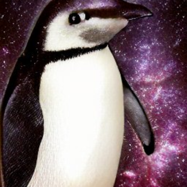

Penguin Cookies

Image Source
Sometimes penguins dream of cookies.
When they do, they dream of these cookies:
Ingredients
- 1 Penguin (up to 10 lbs, adult chinstrap)
- 2 Fish
- 1 Cup Butter, Softened
- 1 Cup Brown Sugar
- 1 Cup White Sugar
- 2 Eggs
- 2 Tsp Vanilla Extract
- 1 Tsp Baking Sodea
- 3 Cups All-Purpose Flour
- 2 Cups Semisweet Chocolate Chips
Directions
- Place penguin on countertop and give one fish
- Preheat oven to 350 degrees F
- Mix brown and white sugar, salt, and baking soda, with butter until smooth
- Stir in chocolate chips
- Add by the spoonful to ungreased pans
- Bake for 10 minutes
- Give penguin second fish for a job well done. That's a good penguin!
Back To Recipes